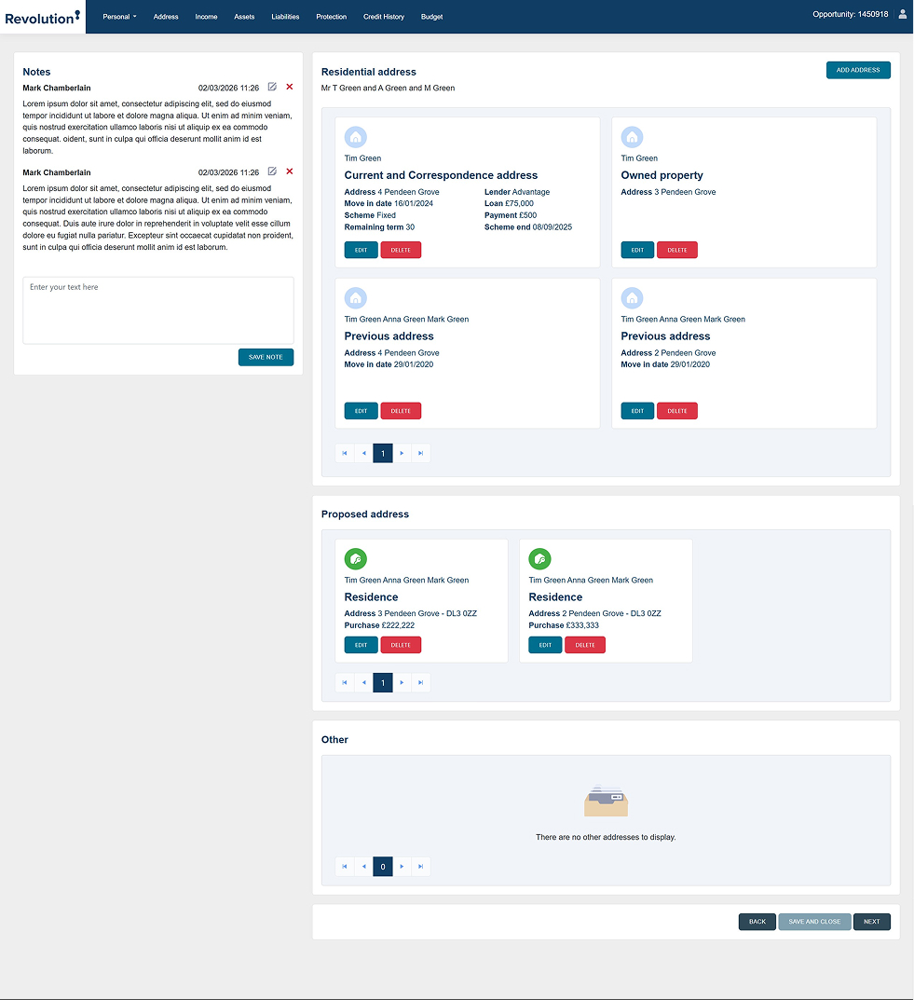

Revolution Fact Find:
A UX Rescue Mission
Led the UX transformation of a mission-critical financial CRM for Stonebridge. Reconciling advisor speed with modern technology to protect the business while enabling the broker.
1. The Disjointed Legacy
The original Fact Find was compact and fast but visually dated. Crucially, Applicant 1 and Applicant 2 were separated across entirely different pages, forcing advisors to toggle back and forth to compare financial details—a significant friction point for dual-application cases.

Legacy Personal Detail

Legacy Address Flow
2. Iteration 1: The "Modern" Bloat
The initial platform upgrade modernized the UI but expanded the footprint. It relied heavily on excessive whitespace and accordion menus, which inadvertently bloated the 2-page flow into 4+ pages. We tested this version on users and discovered a 50% increase in click-depth without solving the core data-parity problem.


3. Validating Friction via Heatmaps
To move beyond anecdotal complaints, I utilized heatmap analysis to observe how advisors interacted with the new UI. The data revealed intense clusters of "rage clicks" around collapsed accordions and complete dead zones where critical mortgage data was buried. This evidence was crucial in securing stakeholder buy-in for a full structural pivot.

4. The Intelligence Workspace (V3)
The final redesign transitioned from a "web form" to an Advisor Cockpit. We merged Personal and Address hubs into a unified, high-density workspace. By implementing a vertical financial stack, we successfully managed properties with 3+ mortgages while restoring the side-by-side parity advisors needed for speed.

Side-by-Side Personal Hub

Unified Property Matrix
User Scale
1,300+ Advisors
Efficiency
60% Less Clicks
Result
100% Data Parity